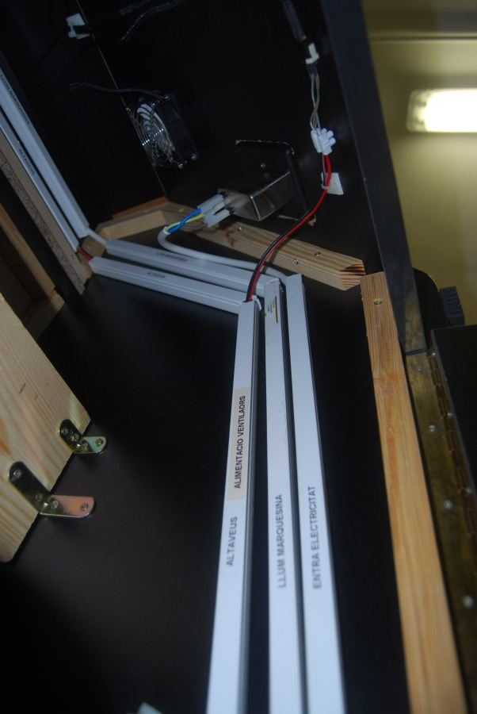
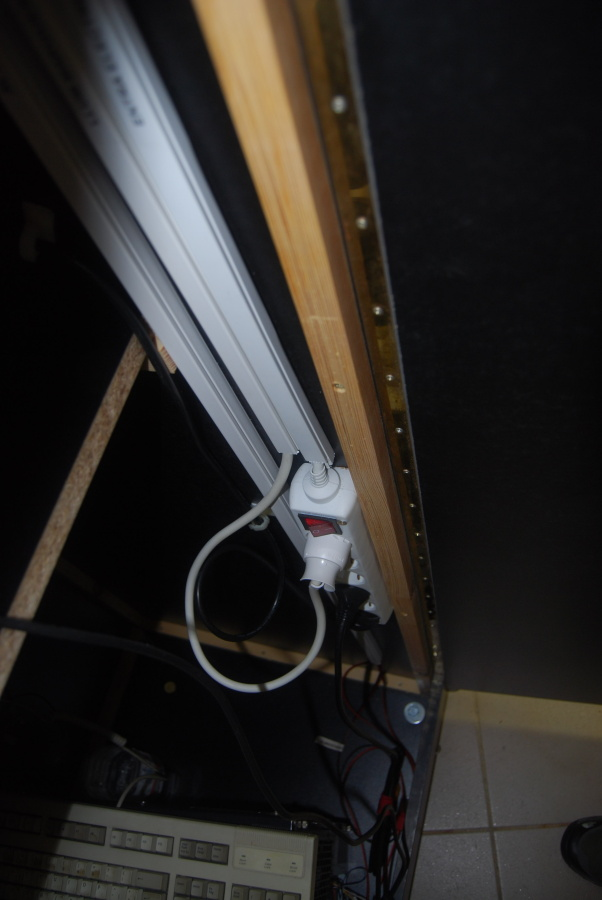
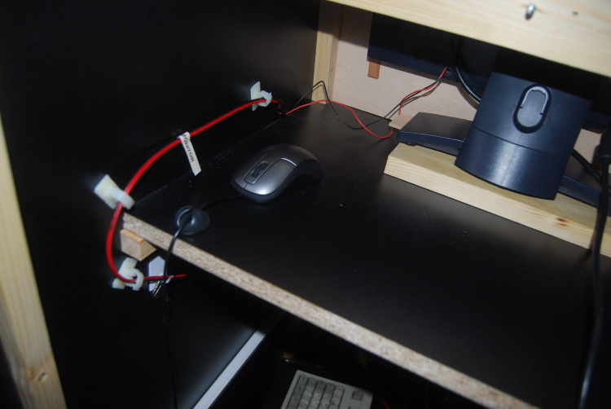
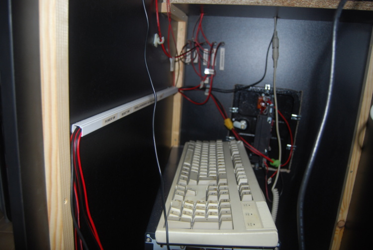
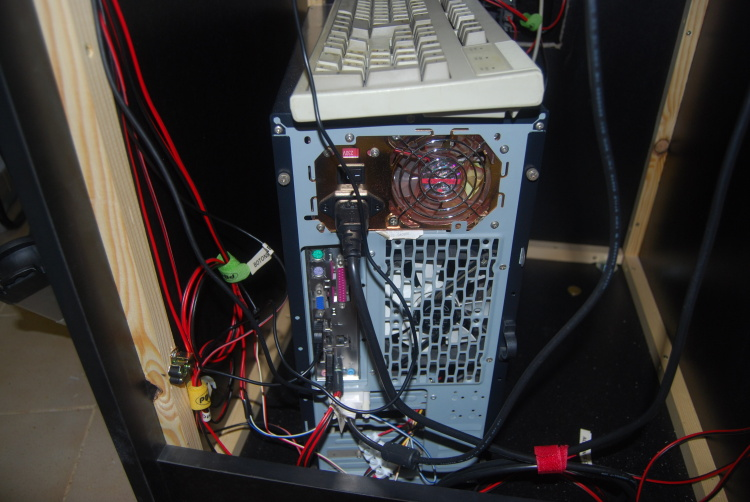

Cableado
Para el cableado de la máquina he usado 2 tipos de cable:
- Manguera de 3 hilos.
- Entrada de alimentación eléctrica hasta la regleta.
- Alimentación luz marquesina.
- Cable de 2 hilos usado para altavoces (rojo y negro).
- Resto de cableado de la máquina.
Dentro de la máquina he puesto una regleta para poder enchufar allí el ordenador y el monitor.
El resto de componentes de la máquina que requieren alimentación lo hacen directamente desde la fuente de alimentación del ordenador. Para esto me hice un cable en el que en la punta que va hacia el ordenador es un conector molex y la punta a la que se le conectan los cables es una ficha de empalme con 4 secciones.
Gran parte de los cables han sido puestos dentro de regletas de luz, separando los que van a 220v., del resto.




